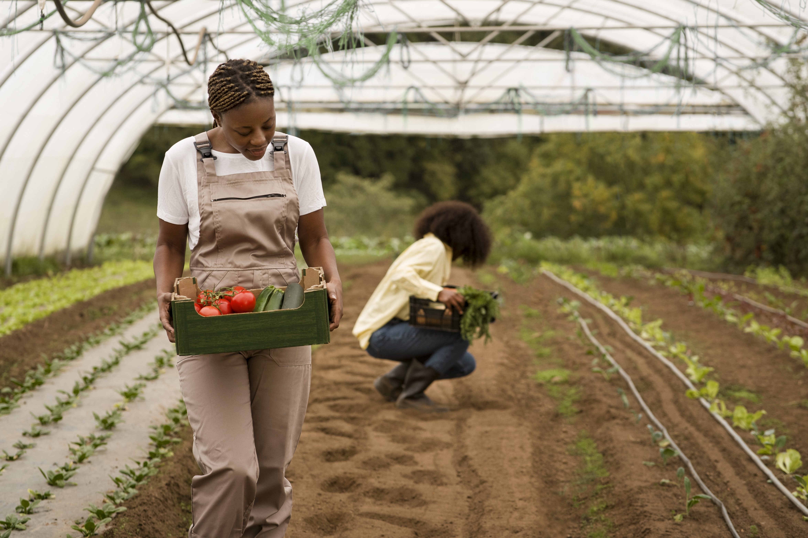

Agriculture is the backbone of our communities and the foundation of daily life. From planting the first seed to bringing fresh harvests to the table, modern farming blends time-tested traditions with smart innovation. Explore our platform to discover practical farming insights, sustainable practices, and the tools you need to grow stronger yields and a healthier planet.
